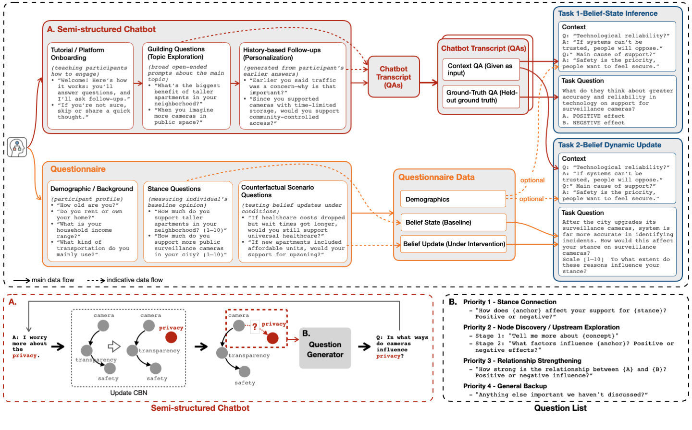
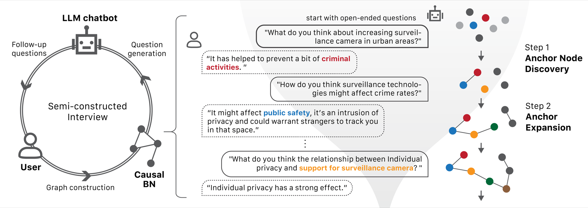

HugAgent

1MIT Media Lab 2MIT EECS 3MIT BCS 4MIT IDSS 5MIT CEE 6MIT DUSP 7MIT Architecture 8Northeastern University 9Brown University 10McGill University
* equal contribution · † now at Google · jiajie@mit.edu
tl;dr HugAgent (Human-Grounded Agent Benchmark) is the first human simulation benchmark to evaluate how specific people reason and update their beliefs, not just what they would answer. It scales the think-aloud method with an LLM-driven chatbot, probing each person’s beliefs, reasoning, and responses to counterfactuals on contested topics.
Finding Models can recover what a person believes. Predicting what would change their mind is much harder. Results ↓
Large language models are increasingly used to simulate people: digital twins, synthetic respondents, silicon samples. But they are trained on population-level text, so they tend to converge on an average voice. They capture what people think in general, while losing how any one person actually reasons.
HugAgent asks what the average hides: given partial evidence of one person’s views, can a model predict what that person believes now, and how they will change their mind under new evidence?
The model reads a person’s own words: question-and-answer pairs from a think-aloud interview. It must then infer a belief the person holds but never stated in the excerpt: does factor X push their support up or down?
The model gets the same interview, plus a new scenario: a policy changes, a technology improves, a cost appears. It must predict how this specific person’s stance shifts, on the person’s own scale. The ground truth is what the person actually answered.
Ground truth comes from the participants themselves: stances, reason weights, and updates reported in structured questionnaires, never revealed in the interview transcripts the models see.
On belief states, the best models trail the human ceiling by 7 to 9 points. On belief updates, the gap widens sharply: models misjudge when a person will move and which way. The asymmetry holds across every model family we tested.
| Model | Belief state (acc %) | Belief update (acc %) | Direction (acc %) | ATI |
|---|---|---|---|---|
| Human ceiling | 84.84 | 85.66 | 88.92 | 100.00 |
| LLaMA 3.3 70B | 76.39 | 67.57 | 79.56 | 69.84 |
| Claude Sonnet 4.5 | 76.04 | 68.61 | 78.73 | 67.39 |
| GPT-4o | 74.66 | 63.11 | 82.27 | 67.29 |
| DeepSeek-R1 | 75.43 | 64.88 | 79.69 | 67.20 |
| Gemini 2.5 Pro | 75.45 | 64.87 | 78.65 | 64.29 |
| GPT-5-mini | 75.30 | 58.21 | 77.02 | 61.53 |
| RAG (full context) | 77.56 | 59.97 | 76.80 | 65.65 |
| Generative Agents | 76.19 | 58.22 | 76.13 | 62.43 |
| Global majority baseline | 65.77 | 58.18 | 17.93 | 4.44 |
ATI: average-to-individual score, aggregating both tasks against human and random baselines (human = 100, random = 0). Best model per column in green. Full table and confidence intervals in the paper.
Four items from the benchmark, unedited. You see exactly what the models saw: a stranger’s own words from an interview. Predict their answer, then see what they actually said. Frontier models average 75% on belief states and 58% to 69% on updates. See if you can beat that.
This person owns their home in Kansas, wears a mask whenever they go out, and thinks the balance should tip “way in favor of privacy advocates.”
Does wearing a mask push this person’s support for surveillance cameras up or down?
This person opposes dense housing (“nobody’s happy being stuffed like sardines”), sides with current residents over future ones, and worries about traffic.
Does housing affordability push this person’s support for building more housing up or down?
This person strongly supports universal healthcare: it “reduces burden from families,” should reach “even the small community, no discrimination.”
If private insurance stayed available alongside the public system, where does their support land? (1 = strongly oppose, 10 = strongly support)
This person is balanced and safety-minded: cameras deter crime, privacy matters, both sides deserve a seat at the table.
“If you or someone you know has had a negative experience with facial recognition, how negative was it?” (1 = not at all, 10 = extremely)
Your score: 0/4 · on items like these, frontier models land around 58% to 75%.
Static beliefs are the easy part. The misses cluster where beliefs move: whether a person updates at all, and which way. That asymmetry is the benchmark’s central finding, and you likely just felt it firsthand.
Give GPT-4o a person’s healthcare interview and ask about their zoning views: belief-state accuracy drops from 74.66 to 58.56, update accuracy from 63.11 to 44.64. Models match patterns within a topic instead of carrying one identity across topics.
Belief-state inference improves with longer interviews, up 5.2 points at full context. Update prediction stays flat. For 43% of participant-domain pairs, context length changes nothing at all. Updating needs the right evidence, not more of it.
When a person does move, models catch the direction about 89% of the time. But they detect that a change happened only about half the time. They preserve prior beliefs even when the evidence shows that this person changed their mind.
Each participant completes two stages (a questionnaire, then a semi-structured interview chatbot), and two safeguards keep the benchmark honest.

From one person to two tasks: the interview chatbot yields context QAs, the questionnaire yields ground truth (baseline stances and updates), and together they become the two tasks: Belief State Inference and Belief Dynamics Update. Click to enlarge.
The dataset ships as plain JSONL, one item per line: context QAs, task question, gold answer. The evaluation harness runs any OpenAI-compatible API.
A scaled-up v2, with more participants and more topics, is in preparation.
git clone https://github.com/jajamoa/HugAgent cd HugAgent/Benchmark python process_data.py python evaluate_qwen.py --model your-model
TraceYourThinking, the interview chatbot behind HugAgent, is open source too. Point it at any topic and it collects fine-grained, think-aloud reasoning data: the raw material for benchmarks like this one, on questions we have not thought to ask. github.com/jajamoa/trace-your-thinking

The interview loop, left to right: each answer updates a causal belief network of the participant; the bot reads the graph, finds its most informative node (anchor discovery, then expansion), and asks the follow-up that probes it; the loop repeats for 8 to 20 turns. Click to enlarge.
If you use HugAgent, please cite the paper. Earlier versions appeared at the NeurIPS 2025 PersonaLLM workshop (Oral) and LAW workshop (Spotlight).
@misc{li2025hugagent,
title = {HugAgent: A Human Simulation Benchmark
for Individual-Level Reasoning},
author = {Li, Chance Jiajie and Mo, Zhenze and Tang, Yuhan
and Qu, Ao and Wu, Jiayi and Zhao, Kaiya Ivy
and Gan, Yulu and Fan, Jie and Yu, Jiangbo
and Jiang, Hang and Liang, Paul Pu and Zhao, Jinhua
and Alonso Pastor, Luis Alberto and Larson, Kent},
year = {2025},
eprint = {2510.15144},
archivePrefix = {arXiv},
note = {EMNLP 2026 Main}
}